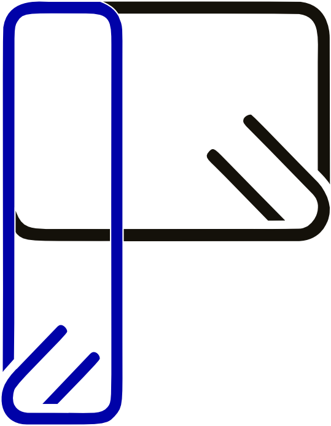
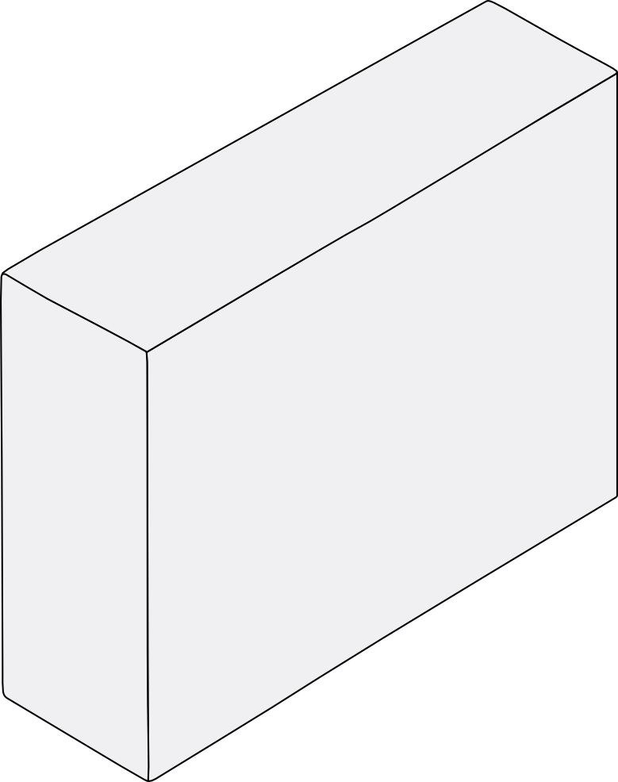
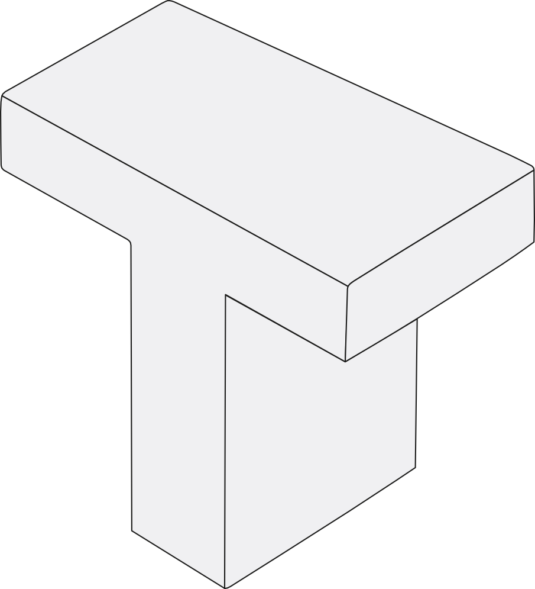
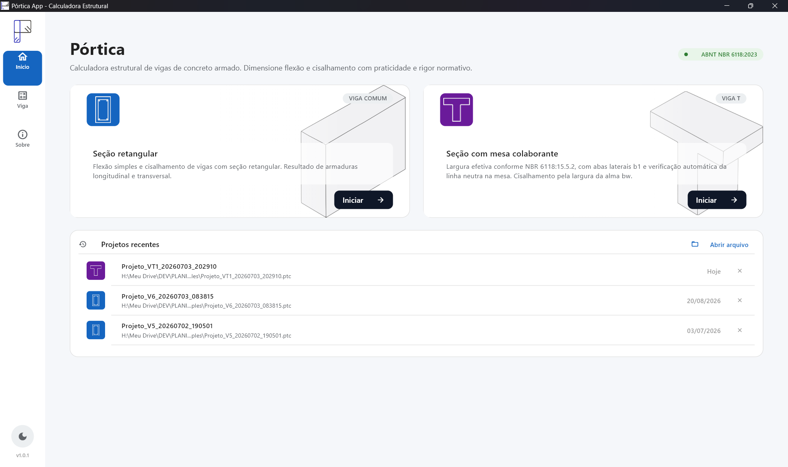
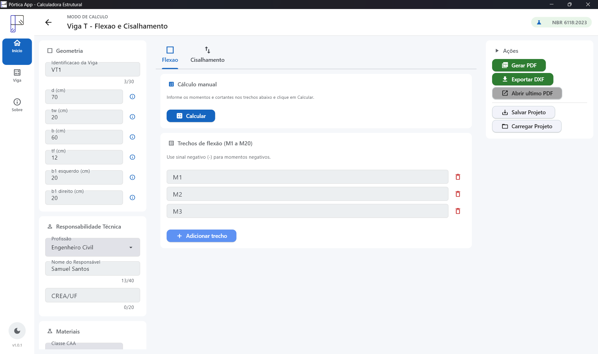
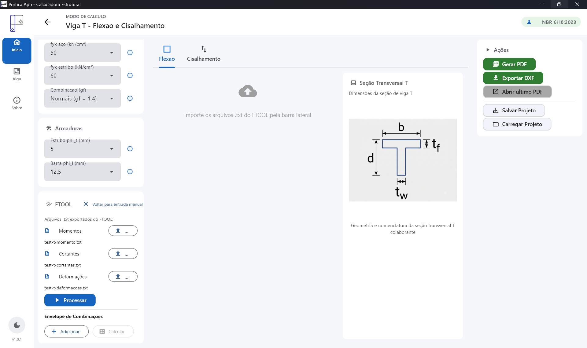
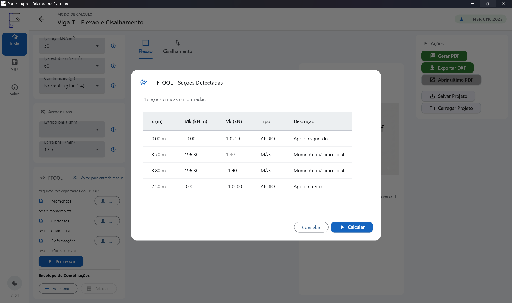
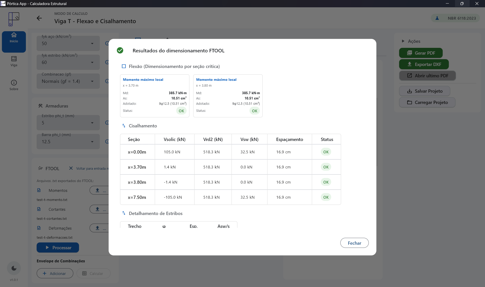
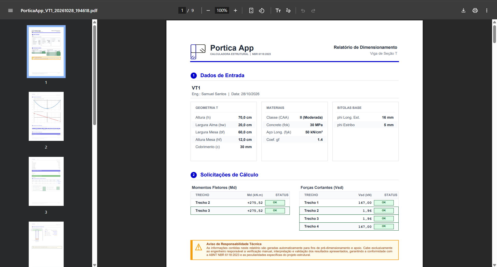
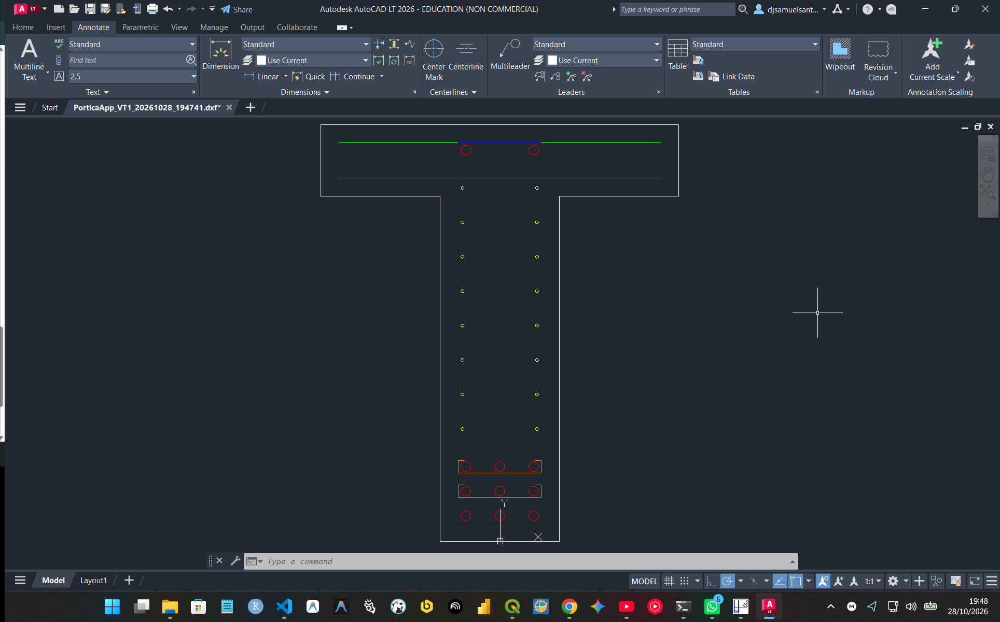

Engenheiros civis
Quem já tem os momentos e cortantes (do FTOOL ou de qualquer análise) e precisa chegar à armadura e ao detalhamento com rastreabilidade.
Software livre · NBR 6118:2023
Calculadora estrutural de vigas de concreto armado — flexão, cisalhamento, armadura dupla, armadura de pele, ELS e detalhamento, com entrada manual ou importação de esforços exportados do FTOOL.

O que é
O Pórtica App dimensiona e detalha vigas de concreto armado — seção
retangular e seção T — a partir dos esforços que o engenheiro já tem:
digitados à mão ou importados dos arquivos .txt exportados
pelo FTOOL. Gera relatório PDF (capa, tabelas, diagramas M(x) e V(x),
esquema da seção e campos de ART/CREA) e exportação DXF.
É software livre (Apache-2.0), roda no Windows e não exige conta, internet ou instalação de Python para usar o executável.
Para quem é
Quem já tem os momentos e cortantes (do FTOOL ou de qualquer análise) e precisa chegar à armadura e ao detalhamento com rastreabilidade.
Conferir exercícios de concreto armado e visualizar os domínios de deformação, a armadura dupla e a verificação de ELS.
O código está no GitHub e pode ser lido, testado e corrigido. Cálculo estrutural precisa ser auditável.
Funcionalidades
Dimensionamento conforme a ABNT NBR 6118:2023, com saídas prontas para o dia a dia de projeto.
Seção retangular e seção T (mesa colaborante), com verificação dos domínios de deformação.
Modelo I da NBR 6118, com contribuição do concreto e do aço, estribos trecho a trecho.
Capa, dados de entrada, tabelas, diagramas M(x)/V(x), esquema da seção e campos de ART/CREA.
Solução com armadura de compressão quando o momento excede o limite do domínio 3.
Dimensionamento automático das costelas para vigas com h ≥ 60 cm.
Flecha imediata e diferida por integração numérica da curvatura; abertura de fissuras wk por classe de agressividade.
Desenho da seção R/T com layers e grampos, pronto para o CAD.
Leitura dos .txt exportados (momento, cortante, deformações), seções críticas e dimensionamento automático.
Salvar e carregar o projeto completo: geometria, materiais, esforços e ajustes.
Telas e figuras
As seções de viga que o app dimensiona e as telas principais do aplicativo.









Como usar
O app tem uma única tela de viga, com dois tipos de seção e duas formas de entrada de esforços.
.txt exportados (momento fletor, cortante e deformações).Download
Dois assets para Windows 10/11 x64. A diferença é o cliente gráfico do Flet.
Ferramenta de apoio
≈ 58 MB. O cliente Flet (~30 MB) é baixado uma única vez no primeiro uso e fica em cache; a partir da segunda execução, abre offline.
Baixar .exe (leve)
≈ 96 MB. O cliente Flet já vem embutido: roda offline desde a primeira
execução. Descompacte e execute o portica.exe.
Todos os downloads também estão na aba
Releases do repositório.
Recomendação: use o .zip se a máquina estiver offline na primeira execução; senão, o .exe leve é menor e se torna offline a partir da segunda vez.
Os checksums SHA-256 de cada arquivo estão nas notas da release.
Limitações e responsabilidade
Aviso
O programa não substitui:
O aviso completo está em DISCLAIMER.md, e também aparece na tela Sobre do app e no rodapé de cada página do relatório PDF.
Documentação
O modelo de cálculo tem página própria. Todo o resto — README, mapa do código, changelog, licença e como contribuir — está no repositório.
Fórmulas e critérios da NBR 6118:2023 implementados: flexão, cisalhamento, viga T, armadura dupla, armadura de pele e ELS.
Ler o modeloDocumentação completa no repositório no GitHub: mapa do código, changelog, licença.
Como citar
O software é citável por DOI (Zenodo). Cite o concept DOI — ele permanece válido entre versões:
dos Santos, S. C. (2026). Pórtica App: calculadora estrutural de vigas de concreto armado (NBR 6118:2023) (versão 1.0.1) [software]. Zenodo. https://doi.org/10.5281/zenodo.23733497

A referência máquina-legível está no arquivo CITATION.cff.
Perguntas frequentes
Depende da versão. A versão offline (.zip) já vem com o cliente Flet embutido e roda sem internet desde a primeira execução. A versão leve (.exe) baixa o cliente gráfico do Flet (~30 MB) uma única vez no primeiro uso; depois disso, fica em cache e o app abre offline a partir da segunda execução. O cálculo em si (dimensionamento, PDF e DXF) é sempre 100% local — sem conta e sem internet.
Os executáveis prontos são para Windows 10/11 x64. O código-fonte é Python (Flet) e, em princípio, roda em Linux/macOS instalando Python 3.10+ e as dependências (pip install -r requirements.txt), mas nesta versão o autor valida oficialmente apenas o Windows.
Complementa. O Pórtica App lê os arquivos .txt exportados pelo FTOOL (momento fletor, cortante e deformações) e faz o dimensionamento e o detalhamento da viga. Não há vínculo ou endosso: "FTOOL" é citado apenas como compatibilidade de formato de arquivo.
Não. O Pórtica App é uma ferramenta de apoio. Os resultados devem ser verificados por engenheiro civil habilitado, com ART/RRT, antes de qualquer uso em projeto executivo. Veja a seção limitações e responsabilidade.
ELS são os Estados-Limites de Serviço da NBR 6118 — verificações de desempenho em serviço. O app calcula a flecha (deformação excessiva, imediata e diferida no tempo) e a fissuração (abertura de fissuras wk), comparando com os limites por classe de agressividade ambiental.
Não. Baixe o executável e use normalmente. Python só é necessário para quem quiser rodar — ou modificar — o código-fonte.
Sim, é software livre sob a licença Apache-2.0: você pode usar, estudar e modificar. O uso em projeto é por sua conta e responsabilidade, com verificação por engenheiro habilitado e ART/RRT.
Abra uma Issue no GitHub informando a versão do app, os dados de entrada, a saída obtida, o valor esperado e a referência normativa. Se preferir, envie um e-mail para samuelsantosambiental@gmail.com. Falhas de cálculo têm procedimento específico, descrito em SECURITY.md.
Doar
Doação opcional, sem paywall e sem feature bloqueada. Se o app te economizou uma tarde, ajude a mantê-lo no ar.
Dois jeitos de contribuir, ambos sem cadastro e sem CNPJ: